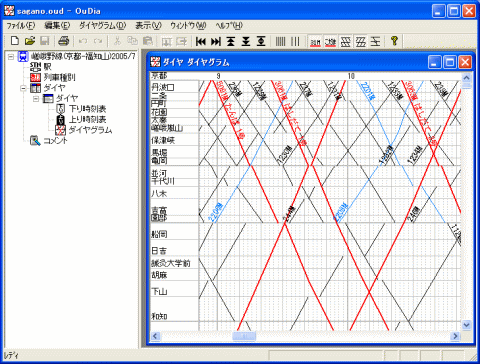
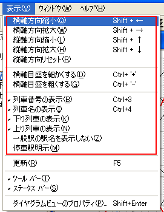
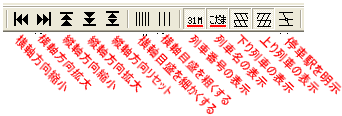

この場合、『ダイヤグラムビュー』は、『時刻表ビュー』のフォーカスセルの位置の駅・列車が画面に表示されるように、ダイヤグラムの表示位置を調整します。
『路線ビュー』の[ダイヤグラム]アイコンをクリックすると、『作業領域』に、ダイヤグラムを表示したウインドウが現れます（以後、このウインドウのことを『ダイヤグラムビュー』と表記します）。
 『時刻表ビュー』を表示した状態で、メニューコマンド [駅時刻]‐[ダイヤグラムへ移動]
を選択することによって、ダイヤグラムを表示させることができます。
『時刻表ビュー』を表示した状態で、メニューコマンド [駅時刻]‐[ダイヤグラムへ移動]
を選択することによって、ダイヤグラムを表示させることができます。
この場合、『ダイヤグラムビュー』は、『時刻表ビュー』のフォーカスセルの位置の駅・列車が画面に表示されるように、ダイヤグラムの表示位置を調整します。
 『時刻表ビュー』を表示した状態で [F8] キーを押しても、メニューコマンド
[駅時刻]‐[ダイヤグラムへ移動]と同じ効果があります。
『時刻表ビュー』を表示した状態で [F8] キーを押しても、メニューコマンド
[駅時刻]‐[ダイヤグラムへ移動]と同じ効果があります。

（図：ダイヤグラムビュー）
カーソルキーやスクロールバーを操作することにより、初電から終電まで・起点から終点までの時刻を閲覧することができます。『ダイヤグラムビュー』の大きさを変えることもできます。
ダイヤグラム上の列車線をダブルクリックすると、『時刻表ビュー』が開きます。このとき、『時刻表ビュー』のフォーカスセルは、ダブルクリックした列車にセットされます。
また、メニュー[表示]の下のメニュー項目を操作することにより、ダイヤの表示方法を変えることができます

（参照：ダイヤグラムビュー）
 ツールバーのボタンでも、同じことができます。
ツールバーのボタンでも、同じことができます。
